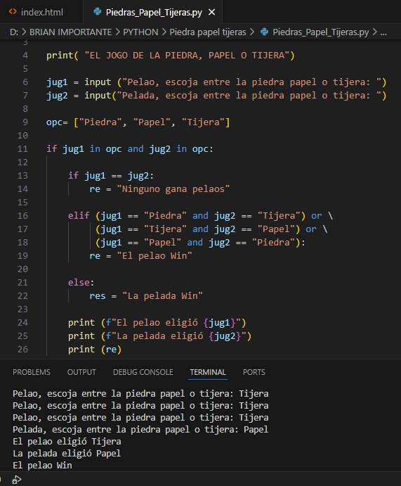

Campista Brian Steven Valencia Ulchur
Taller a solucionar: Instrucciones para el ProyectoEn equipos de 2 o máximo 3 personas, creen un juego de piedra, papel o tijera.Evalúen la entrada de un máximo de 2 jugadores. Para ello, pueden utilizar la función input.Utilicen estructuras condicionales para determinar quién ha sido el ganador.Al finalizar el ejercicio, publiquen la solución en iMaster.Indicaciones adicionales:Trabajen de manera colaborativa en Replit.Diseñen un sitio web que cumpla con los siguientes requisitos:Tenga un color de fondo.Todo el contenido debe estar centrado.Incluya capturas de pantalla del código y de los resultados obtenidos en Replit.Asegúrense de que el sitio web muestre claramente los nombres de los campistas.Solo uno de los campistas debe publicar el repositorio en el foro.
EJEMPLO DE JUEGO.
